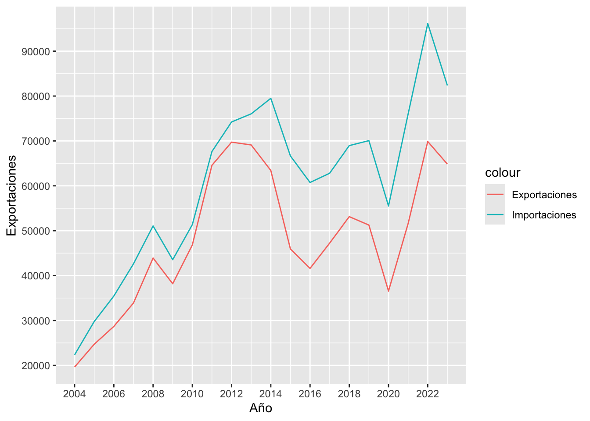
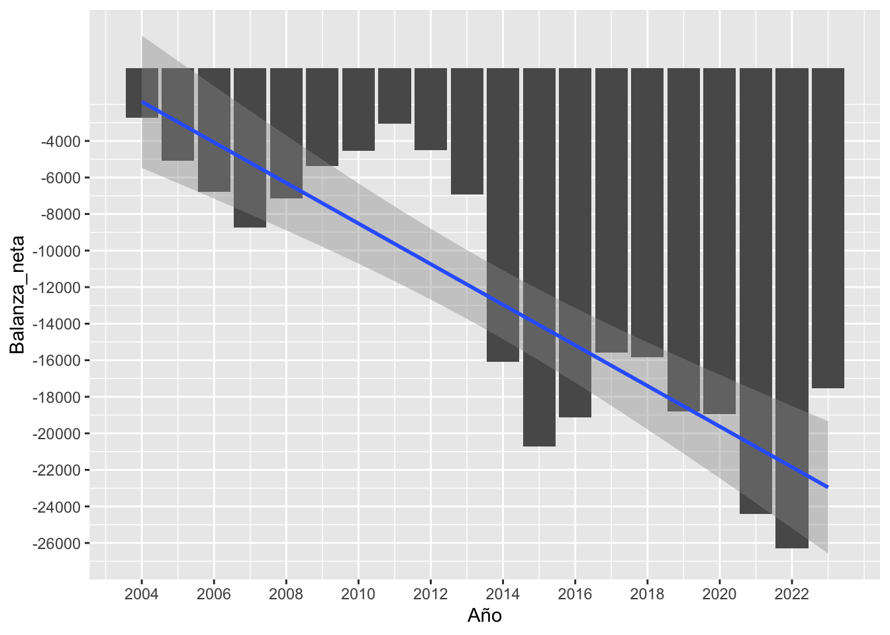
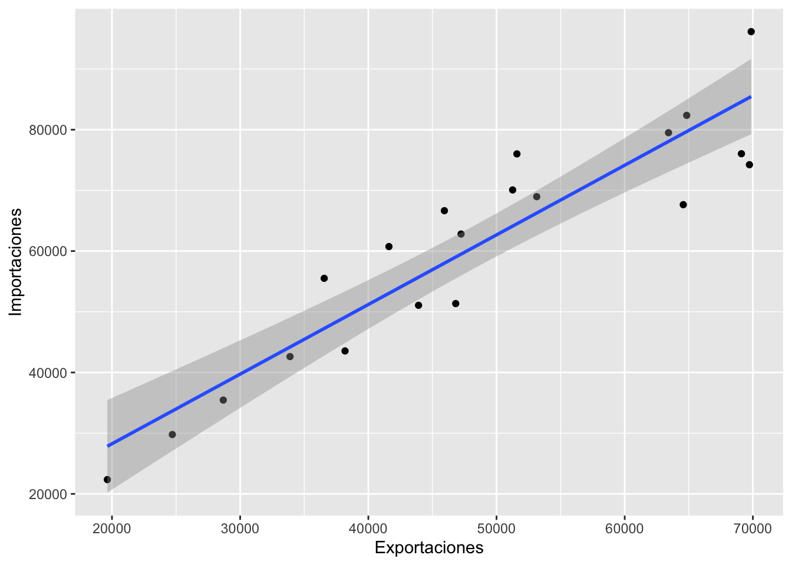

Ciclo de datos: Analisis de la balanza comercial de Colombia 2004-2023
Objetivo de este análisis
Este análisis examina la evolución de la balanza comercial de Colombia entre 2004 y 2023, utilizando datos de exportaciones, importaciones y PIB expresados tanto en términos relativos (% del PIB) como absolutos (millones de USD). La balanza comercial es un indicador clave para entender la dinámica económica de un país, ya que refleja la diferencia entre exportaciones e importaciones. Este informe presenta tablas, estadísticas descriptivas y visualizaciones para identificar tendencias, fluctuaciones y patrones en el comercio exterior de Colombia durante el período estudiado.
Indicadores usados:
NE.EXP.GNFS.ZS: Exportaciones de bienes y servicios (% del PIB) - Colombia
NE.IMP.GNFS.ZS: Importaciones de bienes y servicios (% del PIB) - Colombia
NE.GDP.MKTP.CD: PIB (US$ a precios actuales) - Colombia
Tabla de valores, valor de exportaciones y importaciones expresado en (% del PIB)
Tabla 2: Exportaciones, Importaciones en Millones de USD, Balanza Neta y PIB en US/$ a precios actuales
Estadisticas Resumen
Grafico 1: Evolución de Exportaciones, Importaciones (2004-2023), en millones de USD

Entre 2004 y 2023 las exportaciones e importaciones de Colombia crecen de 20,000 y 25,000 millones de USD a 60,000 y 70,000 millones en 2012, caen a 35,000 y 45,000 millones en 2016 por la baja del petróleo, y se recuperan hasta 50,000 y 90,000 millones en 2022, con una leve baja en 2023, reflejando un déficit comercial persistente (hasta 40,000 millones de USD en 2022), volatilidad en exportaciones por la dependencia de commodities o materias primas, caídas en 2008-2009 (crisis global), 2014-2016 (caida de los precios del petróleo) y 2020 (pandemia)
Grafico 2: Comportamiento Balanza Comercial
`geom_smooth()` using formula = 'y ~ x'
El gráfico muestra una balanza comercial con tendencia negativa para Colombia desde 2004 hasta 2023, con un déficit que se agrava progresivamente a lo largo de los años. La línea azul indica una clara tendencia descendente, sugiriendo que las importaciones de Colombia han superado cada vez más a sus exportaciones durante este período llevando a déficits comerciales crecientes
Grafico 3: Relación entre Importaciones y Exportaciones
`geom_smooth()` using formula = 'y ~ x'
A medida que las exportaciones de Colombia aumentan, sus importaciones tienden a aumentar de manera proporcional. Esto sugiere que el crecimiento de la actividad exportadora colombiana puede estar ligado a una mayor demanda de bienes intermedios importados necesarios para la producción, tambien que un aumento en los ingresos que generan las exportaciones genera una mayor capacidad de compra de bienes y servicios importados.